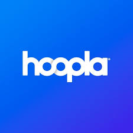

Section
Labor Trends
According to our research, Emerging Technologies is a constantly growing and evolving field in GLAM professions. With the ever-growing reliance on digital systems and infrastructures we experience in our daily lives, public digital literacy and technological tool accessibility become more and more essential. With this growing labor need, experts predict a linear growth in LIS professions that heavily feature and interact with technology services, education, analysis, and infrastructure.
The Impact of Emerging Technologies on Libraries (CollectionHQ)
Workforce Pressures and Hiring Concerns
There are concerns from many, both from those in IS positions and those hoping to secure them, that with an increased rate of MLIS graduates paired with the career’s often low turnover rate and job satisfaction, positions will steadily become harder to secure.
How Technology is Impacting the Library Workforce (CollectionHQ)
Example (professional forum discussion):
“Are there more people with MLIS than there are librarian positions? At what point will that stop?”
Thread on r/librarians (Reddit)
AI Integration and Institutional Policy Work
However, many also argue for a growing necessity of more positions in the near future focused on the use and education of artificial intelligence systems and technologies. Most professionals seem to agree that growing tech and public engagement needs for libraries will lead to job growth.
- Majority of Libraries Planning for AI Integration (Library Journal)
- “The Growing AI Presence in Libraries Will Necessitate a Policy Response!” (The Digital Librarian)
E-Lending and the Future of Access
Edwin Rodarte at LAPL advises that E-Lending is at the core of the future of library catalogs and access services, and his fellow LIS professionals agree.
